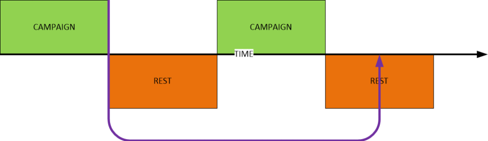
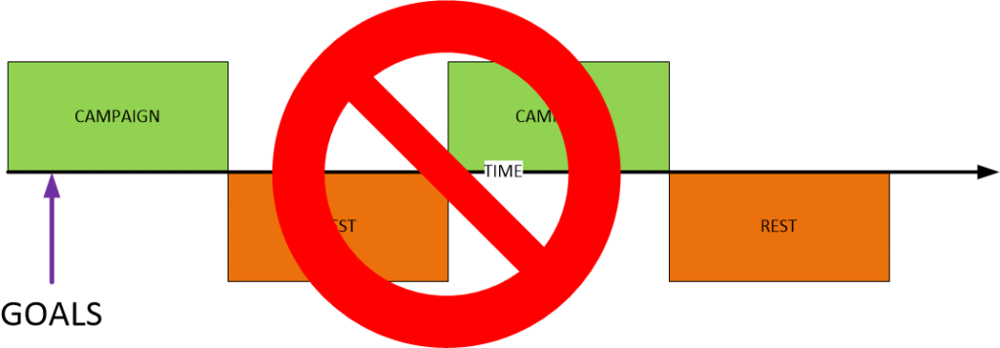
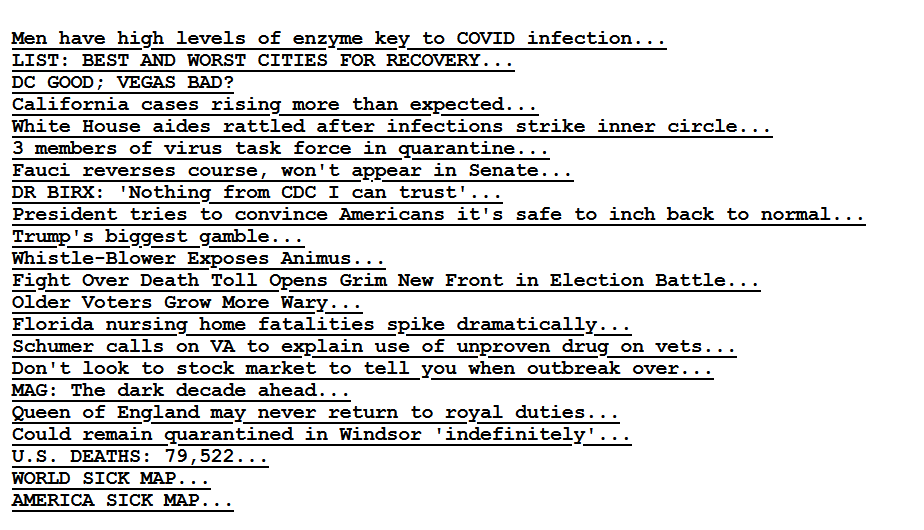

Here we discuss prayer campaigns.
Here are some more notes (or thoughts) in how to best utilize the “Prayer and Affirmation” technique in manual manifestation of World-line travel. We discuss what a “campaign” is, as well as “expectations”, and some dangers of casual efforts. As in all my other posts, please keep in mind that the way our universe works is completely different from what it appears to be. This is the realm of quantum physics, and this post can be considered to be an “application of quantum physics laws for personal physical benefit”.
Campaign
The “prayer / affirmation” technique of MWI World-Line travel requires a sequence of individual “campaigns” of prayer and manifestation. You just cannot say that you will create a list, do it for a while, and then give up and quit. It does not work that way. Yet, that is the first thing that many “newcomers” to this process think.
You need to think in the “long term”.
This means that you will need to focus on one “campaign” at a time. Stop for a while, and then start a new campaign. The new campaigns will always focus on the changes on your life during the “rest periods” between “campaigns”.
So, to properly (manually) world-line travel you will need to have a long, drawn out series of campaigns interspersed with “rest periods” where you neither say your affirmations or think about them. This is of CRITICAL IMPORTANCE.

The length of campaign and the length of the rest period differs for different people. It all depends on your consciousness, your soul, your environment, and the very nature of your goals / wishes.
Most people will advise you to stop your campaign when you “feel” that it is time to stop. This is sound advice. However, not all readers are able to accept this as an answer. So I will offer an alternative concept.
Run your affirmations / prayers on a three month cycle. Three months of programming your affirmations in a campaign. Then three months of rest, and then begin the entire process all over again, but with a different or revised set of goals. Generally, sometime after a period of six months to a year (with nine months on average) you should start to see some manifestation of your desires.
Sudden Manifestations during a Campaign
It has been brought to my attention that some of you all think that once you started the affirmations, and change started to walk into your life, that it was due to your prayers. No. That is wrong. In general, any manifested change will happen MONTHS AFTER a given campaign ended.
Never during a campaign.
So if you start to suddenly see some changes in your life, do not jump to the conclusion that your prayer / affirmations caused them to appear. That likelihood is very, very small.

The rule of thumb is this; The world-line path that you will take will begin to manifest after your last “prayer / affirmation” in your campaign. Never during a campaign.
The importance of forgetting
A prayer campaign means nothing unless you have a “rest” period afterwards. This period is critical and important to the success of your entire effort. Once you have established your affirmations in place, then you will need to let them “go”.
You must turn off your mind.
You see, the way this works is that you use your mind to program your World-Line navigation. That will require your mouth to vocalize and your mind to hear the commands. But it will NEVER manifest unless you free your mind and set it to embark on other day-to-day activities.
The mind must go from “programming” to “running the program”.
In other words you have to “turn off” the programming aspect of this procedure. Then you need to let the pre-programmed brain follow the path that you laid out for it.
Otherwise, it’s still in programming mode. It’s not running the program that you established for it.
It’s like a software program. You need to [1] write the code, and then [2] compile it. Once compiled, you then [3] run the code.
It works exactly like this.
Unless you stop everything and allow the system to compile, it will never run. And, boys and girls, it needs to run for a set period of time (depending on the number of world-lines that you will need to traverse) to finally be able to manifest your goals.
- Write down your affirmations = write the code.
- Say your affirmations in a campaign = compile the code.
- Stop and rest = run the code.
It’s that simple.
The Brain
The brain is just a “tool” that the consciousness uses to interact with a given world-line reality. As such it needs to be programmed. Often, it is the environment that programs the brain. And it is this fact that causes us all the grief that we end up dealing with.
That is why the “prayer / affirmation plus the dream board” is the best all around way (I believe) for most people to use to manifest their goals and desires, and to take control over their life.
It is very important that the reader understand some things quite clearly.
- You are “consciousness”.
- You, as consciousness, come from a larger grouping known as “soul”.
- As consciousness, you move in and out through world-line “realities”.
- Each time you are in a reality, your consciousness uses the brain as a tool to move about and act within that reality.
- You are NOT the brain. This is a common misconception made by many ill-informed people.
The brain is a tool.
You must properly program it to use it properly.
Extent of Affirmations
There are two different philosophies in how to run a prayer / affirmation campaign.
- Focus on one thing at a time. Only one thing per a campaign.
- Put everything in your campaign all at once.
Most certainly, if you concentrate on one thing at a time, it will be far easier to identify when your goal has been met, or is in the process of being met. But, because it is so singular and focused it often can result in all sorts of other issues.
For instance. Let's suppose that you only focus on being "strong" during your campaign. Your brain will manifest your desire to be "strong" following the nearest and closest world-line route. Which might not be what you intend. Let's suppose that you intend to be "strong" like a professional bodybuilder, but your affirmations only say "to be strong". The following manifestations in your "Prayer / affirmation" list are likely to occur... [1] You lose your job and are forced to become a laborer carrying heavy piles of rock up a hill. The job makes you strong. [2] You have a family emergency and you need to be strong emotionally to handle all the events, and turmoil. The strife makes you strong. [3] You decide to start joining a weight-lifting club in a gym because they had a once-in-a-lifetime opportunity to join at 90% off. You make yourself strong.
It’s like the movie “Bedazzled” where the character Elliot tells the Devil that he “wishes to have a hamburger”. And so she gets on a bus, they travel to the other end of the city, and Elliot is forced to pay for a hamburger at a fast food restaurant.
It is for the reasons listed above that I strongly advise that you be as specific as possible in your affirmations. This can lead to many additional supporting lines. In practice, you tend to delineate your lifestyle and other factors over and above the singular desire.
So I am of the opinion to put everything in the campaign and only to expect certain elements on your list to manifest early, with the rest of the things manifesting over time. It’s not a singular target goal, but a general region consisting of multiple goals over time.
Cautions and a little background
I learned how to perform manual MWI travel out of necessity. It’s true. I got involved in manual overrides of my world-line adventures out of necessity.
Some history…
My role in MAJestic was driving me a tad nuts. With slides “out of the blue”, and constantly scrambling while my physical life was rocky and very, very uncomfortable.
It was relentless, and I needed to come up with “coping skills” in order to meet the goals of both MAJestic and my very own personal life.
As a result I started to implement what I knew [1] from my role within MAJestic, and [2] merged it with Q/A via the ELF communications, and [3] a very strong guidance via the EBP. (If all these terms are unusual to you don’t get too upset about them.)
In short, I just needed to be able to learn to pray to maintain my sanity.
I had a very long period of “trial and error” until I was able to master things better. It lasted a very long time with many mistakes along the way.
Then, once I was able to get control of what was going on, I then was able to distill what I had learned and started to implement them. Funny thing is once they were “perfected”, I was advised to “HOLD” and within a few weeks I entered my “MAJestic retirement” sequence in ADC Pine Bluff.
Now, I interpret this to mean that I had mastered what I was supposed to learn, and was ready to be retired with the ELF mothballed, but the EBP still active.
And here we are now.
I can tell you the reader that manual travel through the MWI is a natural event, and it requires some discipline and a degree of shutting off the outside “news” and propaganda. They will retard your ability to achieve your goals. So come caution is required.
- The key to the success of this method is to avoid “news”. It’s all propaganda designed to derail your goals and replace them with the PTB goals instead.
The term PTB is a catch-all for the humans that pretty much run the earth right now, the “Powers That Be”. I will write a post on this sometime in the future, but in general you can consider them to be the people who “pull the strings” behind the scenes. You can read about it HERE.
The PTB pull at your emotions and manipulate your mind for their purposes.

Anyways, you need to focus on your needs and your wants. I know that it is difficult, but you need to do it.
- Your personal goals are incompatible with the goals and manipulation that you see on the media, the news and the internet.
So what you need to do is be focused like a laser. You need to think about your prayers manifesting, and ignore the latest round of heart-tugging news designed to derail your personal efforts.
The rule of thumb is this; the implementation of your goals via a prayer campaign would be delayed by the influence of the “news” on your brain. If you are an avid consumer of “news” and commenting on Social Media is a habit and an addiction, you can expect your goals to be delayed substantially.
The “Long Haul”
If you are doing this, you are in the “Long Haul”. This should become a very important part of you and part of your lifestyle. This is particularly difficult for Americans to understand. As we want immediate responses, and results. We want short durations pleasures that are easy to obtain. We want “Fast Food”, not formal sit-down family meals. We want “instant 2-24 hour news”, not a monthly magazine article. We want the latest fashions NOW!, not next year when you can afford them.
This short-term desire and objectives will not work with the “prayer / affirmation” method of World-Line travel. That is because the more “out there”; the more “extreme” your desires, the longer it will take to manifest. In order words, a prayer to eat an ice cream cone might require 56 world-lines to cross-over and slide into. While a desire to become the King of New Jersey, might take 567,847,933,872,283,325,023 World-Lines to manifest.
Conclusion
World-line travel is never conducted “on the fly”.
It is always planned out and put into action with specific objectives and goals in mind. This is true whether you are entering a MAJestic dimensional portal, using a (so called) “time machine”, or manipulating your reality via prayer. You must plan out your goals, put them into your computer; your brain, and set it to run without interruption.
You must turn off the “news” least your programming would start getting a “virus” or “glitches”.
Finally, when it starts to manifest you might be surprised at the strange and unusual things that might confront you. Trust me, you have absolutely no idea how spectacular things that manifest.
Do you want more…
I do hope that you enjoyed this post. I have many more in my intention section of my MAJestic index, here…
Articles & Links
You’ll not find any big banners or popups here talking about cookies and privacy notices. There are no ads on this site (aside from the hosting ads – a necessary evil). Functionally and fundamentally, I just don’t make money off of this blog. It is NOT monetized. Finally, I don’t track you because I just don’t care to.
To go to the MAIN Index;
- You can start reading the articles by going HERE.
- You can visit the Index Page HERE to explore by article subject.
- You can also ask the author some questions. You can go HERE .
- You can find out more about the author HERE.
- If you have concerns or complaints, you can go HERE.
- If you want to make a donation, you can go HERE.
Please kindly help me out in this effort. There is a lot of effort that goes into this disclosure. I could use all the financial support that anyone could provide. Thank you very much.
[wp_paypal_payment]